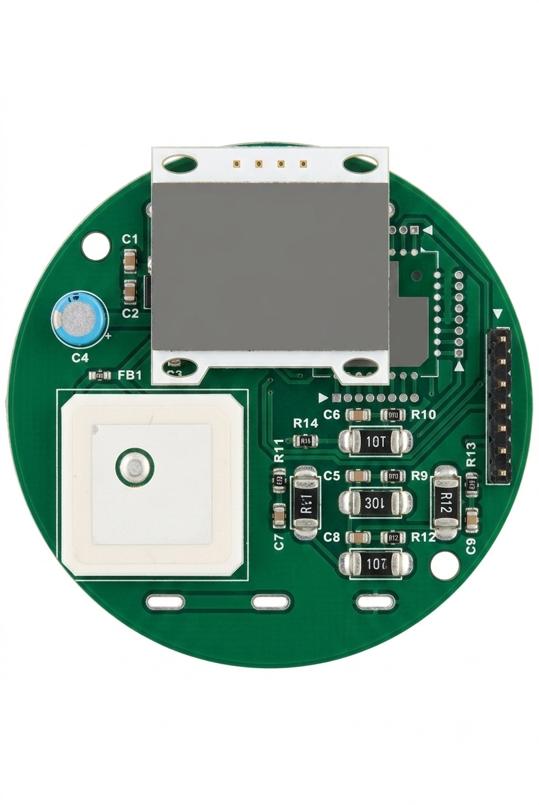
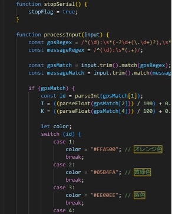
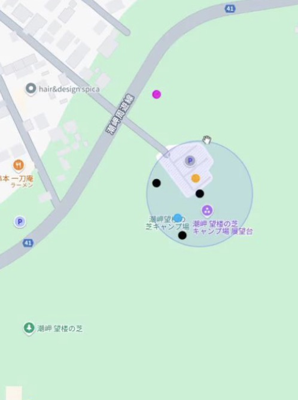

CanSat Koshien
缶サイズの模擬人工衛星「缶サット」を用いた宇宙工学・組み込みシステム開発プロジェクト。 モデルロケットによって上空へ打ち上げられたCanSatが、 降下・着地するまでの間にセンサデータを取得し、 ミッション達成を目指すシステムを開発した。
My Role
チームリーダーとして、開発全体の設計方針・進行管理・技術統括を担当しました。
Autodesk Fusionを用いた缶サット機構設計、3Dプリント部品設計を行いました。
限られたサイズ・重量制約の中で、安定したデータ取得と降下後の動作を実現するため、機体内部構造やセンサ配置を繰り返し改善しました。
取得したログデータを直感的に理解することができるwebページを作成しました。
技術資料の制作、打ち上げ事前プレゼンの動画の作成の一部なども行いました。
Project Detail
私たちのチームは、大規模災害発生時、孤立地域にいる被災者の状況を一元的に把握できるシステムを缶サットを通じて実装しました。
缶サットのサイズや重量の制約が多く機体内部のレイアウトの最適化が課題となった。 1度の打ち上げで散布できる子機数を増やすことと安全な速度で降下すること、センサ誤動作を抑えることを実現するため、缶サットやパラシュートの設計を繰り返し検討しました。
取得したGPSデータとテキストデータの解析と直感的に把握できるように可視化を行いました。
Competition
缶サット甲子園2024
Feature
制約下でのシステム統合・可視化
Result
和歌山地方大会4位